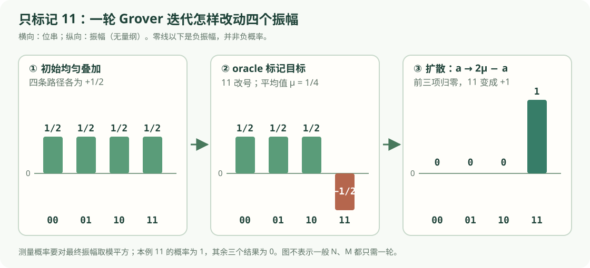

07｜代表性量子算法：从隐藏周期到量子模拟
本章关注完整算法，而不只介绍一个子线路。每次谈“加速”都要同时说明：输入规模、访问模型、成功概率、输出形式、经典比较对象和是否计入输入输出成本。
如果数学已经有些生疏，可分两遍读。第一遍先看 Simon、Grover、Shor 的问题定义与小算例，再看 HHL 的二维解态；读懂“输入是什么、测量给什么、何时会失败”即可。第二遍再回看 Shor 的非整齐峰、量子模拟的误差预算、幅度估计定理和复杂度类。这些段落需要较多矩阵、模运算或概率背景，不是理解前三个算法的门槛。用到相位估计或 QFT 的具体线路时，可同时翻看第 06 章的算法骨架 。
先记住两种不同的“快”：查询次数 只数向黑盒提问多少次；门数与总时间 还要计入把黑盒做成电路、制备输入、反计算、测量和重试。本章说到指数或平方优势时，都会注明比较的是哪一种。
1. Simon 算法：指数级查询优势的原型
Simon 问题像一场“找固定异或差”的游戏。给定黑盒函数
f : { 0 , 1 } n → { 0 , 1 } n ,
f:\{0,1\}^n\to\{0,1\}^n,
f : { 0 , 1 } n → { 0 , 1 } n , 承诺存在非零串 s s s
f ( x ) = f ( y ) ⟺ y = x 或 y = x ⊕ s ,
f(x)=f(y)\quad\Longleftrightarrow\quad
y=x\ \text{或}\ y=x\oplus s,
f ( x ) = f ( y ) ⟺ y = x 或 y = x ⊕ s , 等价地，x ⊕ y ∈ { 0 n , s } x\oplus y\in\{0^n,s\} x ⊕ y ∈ { 0 n , s }
符号 x ⊕ s x\oplus s x ⊕ s 001 ⊕ 110 = 111 001\oplus110=111 001 ⊕ 110 = 111 s ≠ 0 n s\ne0^n s = 0 n s s s s = 0 n s=0^n s = 0 n s s s
测量后得到的点积也在二进制里计算：x ⋅ z = x 1 z 1 ⊕ ⋯ ⊕ x n z n x\cdot z=x_1z_1\oplus\cdots\oplus x_nz_n x ⋅ z = x 1 z 1 ⊕ ⋯ ⊕ x n z n 110 ⋅ 001 = 0 ⊕ 0 ⊕ 0 = 0 110\cdot001=0\oplus0\oplus0=0 110 ⋅ 001 = 0 ⊕ 0 ⊕ 0 = 0 110 ⋅ 100 = 1 ⊕ 0 ⊕ 0 = 1 110\cdot100=1\oplus0\oplus0=1 110 ⋅ 100 = 1 ⊕ 0 ⊕ 0 = 1 s s s s s s
一次量子采样怎样产生一条方程
从两个全零寄存器出发：
∣ 0 n ⟩ ∣ 0 n ⟩ → H ⊗ n 1 2 n ∑ x ∣ x ⟩ ∣ 0 n ⟩ .
|0^n\rangle|0^n\rangle
\xrightarrow{H^{\otimes n}}
\frac1{\sqrt{2^n}}\sum_x|x\rangle|0^n\rangle.
∣ 0 n ⟩ ∣ 0 n ⟩ H ⊗ n 2 n 1 x ∑ ∣ x ⟩ ∣ 0 n ⟩ . 调用函数 oracle：
1 2 n ∑ x ∣ x ⟩ ∣ f ( x ) ⟩ .
\frac1{\sqrt{2^n}}\sum_x|x\rangle|f(x)\rangle.
2 n 1 x ∑ ∣ x ⟩ ∣ f ( x )⟩ . 若测量第二寄存器得到 f ( x 0 ) f(x_0) f ( x 0 )
∣ x 0 ⟩ + ∣ x 0 ⊕ s ⟩ 2 .
\frac{|x_0\rangle+|x_0\oplus s\rangle}{\sqrt2}.
2 ∣ x 0 ⟩ + ∣ x 0 ⊕ s ⟩ . 对它施加 H ⊗ n H^{\otimes n} H ⊗ n
H ⊗ n ∣ x ⟩ = 1 2 n ∑ z ( − 1 ) x ⋅ z ∣ z ⟩ ,
H^{\otimes n}|x\rangle=
\frac1{\sqrt{2^n}}\sum_z(-1)^{x\cdot z}|z\rangle,
H ⊗ n ∣ x ⟩ = 2 n 1 z ∑ ( − 1 ) x ⋅ z ∣ z ⟩ , 可得每个 ∣ z ⟩ |z\rangle ∣ z ⟩
1 + ( − 1 ) s ⋅ z .
1+(-1)^{s\cdot z}.
1 + ( − 1 ) s ⋅ z . 若 s ⋅ z = 1 s\cdot z=1 s ⋅ z = 1 s ⋅ z = 0 s\cdot z=0 s ⋅ z = 0
z ⋅ s = 0 ( m o d 2 )
z\cdot s=0\pmod2
z ⋅ s = 0 ( mod 2 ) 的随机 z z z z z z
三比特手算
令 s = 110 s=110 s = 110
∣ 001 ⟩ + ∣ 111 ⟩ 2 .
\frac{|001\rangle+|111\rangle}{\sqrt2}.
2 ∣001 ⟩ + ∣111 ⟩ . 末层 Hadamard 得
1 2 ( ∣ 000 ⟩ − ∣ 001 ⟩ + ∣ 110 ⟩ − ∣ 111 ⟩ ) .
\frac12\left(|000\rangle-|001\rangle+|110\rangle-|111\rangle\right).
2 1 ( ∣000 ⟩ − ∣001 ⟩ + ∣110 ⟩ − ∣111 ⟩ ) . 支持集中的四个串均满足 z 1 ⊕ z 2 = 0 z_1\oplus z_2=0 z 1 ⊕ z 2 = 0 001 001 001 110 110 110
s 3 = 0 , s 1 ⊕ s 2 = 0.
s_3=0,\qquad s_1\oplus s_2=0.
s 3 = 0 , s 1 ⊕ s 2 = 0. 再结合承诺 s ≠ 000 s\ne000 s = 000 s = 110 s=110 s = 110
为什么不能只看一次结果就猜出 s s s z = 001 z=001 z = 001 s 3 = 0 s_3=0 s 3 = 0 010 , 100 , 110 010,100,110 010 , 100 , 110 001 001 001 z = 000 z=000 z = 000 0 = 0 0=0 0 = 0 s s s s s s
一般要收集约 O ( n ) O(n) O ( n ) n − 1 n-1 n − 1 F 2 \mathbb F_2 F 2 O ( n ) O(n) O ( n ) Θ ( 2 n / 2 ) \Theta(2^{n/2}) Θ ( 2 n /2 )
这个 O ( n ) O(n) O ( n ) n − 1 n-1 n − 1
s ⊥ = { 000 , 001 , 110 , 111 } .
s^\perp=\{000,001,110,111\}.
s ⊥ = { 000 , 001 , 110 , 111 } . 它是维数 d = n − 1 = 2 d=n-1=2 d = n − 1 = 2 3 / 4 3/4 3/4 1 / ( 3 / 4 ) = 4 / 3 1/(3/4)=4/3 1/ ( 3/4 ) = 4/3 2 / 4 = 1 / 2 2/4=1/2 2/4 = 1/2
4 3 + 2 = 10 3
\frac43+2=\frac{10}{3}
3 4 + 2 = 3 10 次 oracle 采样，而不是恰好 2 次。一般地，当前秩为 r < d r<d r < d 1 − 2 r − d 1-2^{r-d} 1 − 2 r − d
∑ r = 0 d − 1 1 1 − 2 r − d = d + O ( 1 ) = O ( n ) .
\sum_{r=0}^{d-1}\frac1{1-2^{r-d}}=d+O(1)=O(n).
r = 0 ∑ d − 1 1 − 2 r − d 1 = d + O ( 1 ) = O ( n ) . 采样结束后还需在 F 2 \mathbb F_2 F 2 O ( n ) O(n) O ( n )
从更高一层看，Simon 算法是在群 Z 2 n \mathbb Z_2^n Z 2 n { 0 , s } \{0,s\} { 0 , s }
2. Grover 搜索
问题：在 N N N M M M ∣ G ⟩ |G\rangle ∣ G ⟩ ∣ B ⟩ |B\rangle ∣ B ⟩
∣ s ⟩ = sin θ ∣ G ⟩ + cos θ ∣ B ⟩ , sin 2 θ = M N .
|s\rangle=\sin\theta|G\rangle+\cos\theta|B\rangle,
\qquad \sin^2\theta=\frac MN.
∣ s ⟩ = sin θ ∣ G ⟩ + cos θ ∣ B ⟩ , sin 2 θ = N M . 一次 Grover 迭代把角度增加 2 θ 2\theta 2 θ k k k
p k = sin 2 ( ( 2 k + 1 ) θ ) .
p_k=\sin^2((2k+1)\theta).
p k = sin 2 (( 2 k + 1 ) θ ) . 公式里的“一次迭代”含两件事：标记 oracle 把好项的振幅变成负号，随后扩散操作 把每个振幅 a x a_x a x 2 a ˉ − a x 2\bar a-a_x 2 a ˉ − a x a ˉ \bar a a ˉ N N N ∣ 11 ⟩ |11\rangle ∣11 ⟩

打开原尺寸图 ↗
标记后的平均值是 ( 1 / 2 + 1 / 2 + 1 / 2 − 1 / 2 ) / 4 = 1 / 4 (1/2+1/2+1/2-1/2)/4=1/4 ( 1/2 + 1/2 + 1/2 − 1/2 ) /4 = 1/4 2 ( 1 / 4 ) − 1 / 2 = 0 2(1/4)-1/2=0 2 ( 1/4 ) − 1/2 = 0 2 ( 1 / 4 ) − ( − 1 / 2 ) = 1 2(1/4)-(-1/2)=1 2 ( 1/4 ) − ( − 1/2 ) = 1 11 的概率为 ∣ 1 ∣ 2 = 1 |1|^2=1 ∣1 ∣ 2 = 1 N , M N,M N , M 第 06 章第 4 节 。
当 M ≪ N M\ll N M ≪ N M M M
k ≈ π 4 N M − 1 2 ,
k\approx\frac\pi4\sqrt{\frac NM}-\frac12,
k ≈ 4 π M N − 2 1 , 取最接近的非负整数。查询复杂度为 Θ ( N / M ) \Theta(\sqrt{N/M}) Θ ( N / M )
未知解数与过度旋转
若 M M M ⌊ ( π / 4 ) N ⌋ \lfloor(\pi/4)\sqrt N\rfloor ⌊( π /4 ) N ⌋ M M M
以 N = 16 N=16 N = 16 p k = sin 2 ( ( 2 k + 1 ) θ ) p_k=\sin^2((2k+1)\theta) p k = sin 2 (( 2 k + 1 ) θ )
若误以为只有一个解而选 k = 3 k=3 k = 3 1 / 4 1/4 1/4 k = 1 k=1 k = 1
未知 M M M 0 , 1 , … , m − 1 0,1,\ldots,m-1 0 , 1 , … , m − 1 k k k M > 0 M>0 M > 0 O ( N / M ) O(\sqrt{N/M}) O ( N / M ) M = 0 M=0 M = 0 O ( N ) O(\sqrt N) O ( N ) M M M
不能忽略的成本
构造并可逆运行判断谓词的门数；
数据是否能被相干、随机访问；
扩散操作和辅助位反计算；
容错实现、失败重试与最终验证；
大规模并行经典搜索的墙钟时间基线。
因此，Grover 保证的是查询模型中的平方优势，不是所有“遍历业务数据”的自动平方墙钟加速。对 2 n 2^n 2 n 2 n / 2 2^{n/2} 2 n /2
3. Shor 算法：从整数分解到阶寻找
3.1 经典约化
要分解奇合数 N N N u ≡ v ( m o d N ) u\equiv v\pmod N u ≡ v ( mod N ) u − v u-v u − v N N N 16 ≡ 1 ( m o d 15 ) 16\equiv1\pmod{15} 16 ≡ 1 ( mod 15 ) a r m o d N a^r\bmod N a r mod N a r a^r a r N N N gcd ( u , N ) \gcd(u,N) g cd( u , N ) u u u N N N gcd ( 12 , 15 ) = 3 \gcd(12,15)=3 g cd( 12 , 15 ) = 3 阶 r r r a r ≡ 1 ( m o d N ) a^r\equiv1\pmod N a r ≡ 1 ( mod N )
先用经典算法检查素性与完美幂。若 N N N N = b m N=b^m N = b m m ≥ 2 m\ge2 m ≥ 2 b b b b b b
对剩下的输入，随机选 1 < a < N 1<a<N 1 < a < N gcd ( a , N ) > 1 \gcd(a,N)>1 g cd( a , N ) > 1
寻找最小正整数 r r r a r ≡ 1 ( m o d N ) a^r\equiv1\pmod N a r ≡ 1 ( mod N )
若 r r r a a a
若 a r / 2 ≡ − 1 ( m o d N ) a^{r/2}\equiv-1\pmod N a r /2 ≡ − 1 ( mod N ) a a a
否则利用
a r − 1 = ( a r / 2 − 1 ) ( a r / 2 + 1 )
a^r-1=(a^{r/2}-1)(a^{r/2}+1)
a r − 1 = ( a r /2 − 1 ) ( a r /2 + 1 ) 计算
gcd ( a r / 2 − 1 , N ) , gcd ( a r / 2 + 1 , N ) ,
\gcd(a^{r/2}-1,N),\qquad
\gcd(a^{r/2}+1,N),
g cd( a r /2 − 1 , N ) , g cd( a r /2 + 1 , N ) , 得到非平凡因子。
为什么步骤 5 只需额外排除 − 1 -1 − 1 u = a r / 2 m o d N u=a^{r/2}\bmod N u = a r /2 mod N r r r u 2 ≡ a r ≡ 1 ( m o d N ) u^2\equiv a^r\equiv1\pmod N u 2 ≡ a r ≡ 1 ( mod N ) u ≡ 1 ( m o d N ) u\equiv1\pmod N u ≡ 1 ( mod N ) r r r 最小 正阶矛盾；所以剩下的坏情况是 u ≡ − 1 ( m o d N ) u\equiv-1\pmod N u ≡ − 1 ( mod N ) N N N u u u 1 1 1 − 1 -1 − 1 N N N ( u − 1 ) ( u + 1 ) (u-1)(u+1) ( u − 1 ) ( u + 1 )
因此，量子部分解决的是阶寻找 ，不是直接输出因子；取最大公因数与验算都在普通计算机上完成。
3.2 相位估计如何看见阶
第 06 章已经介绍 QFT 的线路；这里补一段小算例，说明它在阶寻找中究竟做了什么。取大小 Q = 16 Q=16 Q = 16 0 , 4 , 8 , 12 0,4,8,12 0 , 4 , 8 , 12
∣ P ⟩ = ∣ 0 ⟩ + ∣ 4 ⟩ + ∣ 8 ⟩ + ∣ 12 ⟩ 2 .
|P\rangle=\frac{|0\rangle+|4\rangle+|8\rangle+|12\rangle}{2}.
∣ P ⟩ = 2 ∣0 ⟩ + ∣4 ⟩ + ∣8 ⟩ + ∣12 ⟩ . 四个位置每隔 4 重复一次，周期 r = 4 r=4 r = 4 F Q ∣ x ⟩ = Q − 1 / 2 ∑ y = 0 Q − 1 e 2 π i x y / Q ∣ y ⟩ F_Q|x\rangle=Q^{-1/2}\sum_{y=0}^{Q-1}e^{2\pi ixy/Q}|y\rangle F Q ∣ x ⟩ = Q − 1/2 ∑ y = 0 Q − 1 e 2 πi x y / Q ∣ y ⟩ ∣ y ⟩ |y\rangle ∣ y ⟩
1 2 16 ∑ j = 0 3 e 2 π i ( 4 j ) y / 16 = 1 8 ∑ j = 0 3 e 2 π i j y / 4 .
\frac1{2\sqrt{16}}\sum_{j=0}^3 e^{2\pi i(4j)y/16}
=\frac18\sum_{j=0}^3e^{2\pi ijy/4}.
2 16 1 j = 0 ∑ 3 e 2 πi ( 4 j ) y /16 = 8 1 j = 0 ∑ 3 e 2 πij y /4 . 若 y = 0 , 4 , 8 , 12 y=0,4,8,12 y = 0 , 4 , 8 , 12 4 / 8 = 1 / 2 4/8=1/2 4/8 = 1/2 1 / 4 1/4 1/4 y y y Q / r = 4 Q/r=4 Q / r = 4 r r r Q Q Q y / Q ≈ k / r y/Q\approx k/r y / Q ≈ k / r 逆 QFT，其指数符号相反，但这里讨论的峰位置不变。这个手算只是解释 Fourier 机制；真正可扩展的 Shor 电路还必须高效实现受控模乘。
令 a a a N N N 0 ≤ y < N 0\le y<N 0 ≤ y < N
U a ∣ y ⟩ = ∣ a y m o d N ⟩ .
U_a|y\rangle=|ay\bmod N\rangle.
U a ∣ y ⟩ = ∣ a y mod N ⟩ . 由于 gcd ( a , N ) = 1 \gcd(a,N)=1 g cd( a , N ) = 1 N N N a − 1 a^{-1} a − 1 a y 1 ≡ a y 2 ( m o d N ) ay_1\equiv ay_2\pmod N a y 1 ≡ a y 2 ( mod N ) a − 1 a^{-1} a − 1 y 1 ≡ y 2 ( m o d N ) y_1\equiv y_2\pmod N y 1 ≡ y 2 ( mod N ) N N N N N N ∣ 1 ⟩ |1\rangle ∣1 ⟩ 2 ⌈ log 2 N ⌉ 2^{\lceil\log_2N\rceil} 2 ⌈ l o g 2 N ⌉ y ≥ N y\ge N y ≥ N ∣ 1 ⟩ |1\rangle ∣1 ⟩
若 a a a r r r
∣ u k ⟩ = 1 r ∑ j = 0 r − 1 e − 2 π i k j / r ∣ a j m o d N ⟩
|u_k\rangle=\frac1{\sqrt r}\sum_{j=0}^{r-1}
e^{-2\pi ikj/r}|a^j\bmod N\rangle
∣ u k ⟩ = r 1 j = 0 ∑ r − 1 e − 2 πikj / r ∣ a j mod N ⟩ 满足
U a ∣ u k ⟩ = e 2 π i k / r ∣ u k ⟩ .
U_a|u_k\rangle=e^{2\pi ik/r}|u_k\rangle.
U a ∣ u k ⟩ = e 2 πik / r ∣ u k ⟩ . 核对这个本征值只需把求和指标从 j j j ℓ = j + 1 ( m o d r ) \ell=j+1\pmod r ℓ = j + 1 ( mod r ) U a U_a U a ∣ a j ⟩ |a^j\rangle ∣ a j ⟩ ∣ a j + 1 ⟩ |a^{j+1}\rangle ∣ a j + 1 ⟩
e − 2 π i k ( ℓ − 1 ) / r = e 2 π i k / r e − 2 π i k ℓ / r .
e^{-2\pi ik(\ell-1)/r}
=e^{2\pi ik/r}e^{-2\pi ik\ell/r}.
e − 2 πik ( ℓ − 1 ) / r = e 2 πik / r e − 2 πik ℓ / r . 反过来，利用 ∑ k = 0 r − 1 e − 2 π i k j / r = r \sum_{k=0}^{r-1}e^{-2\pi ikj/r}=r ∑ k = 0 r − 1 e − 2 πikj / r = r j = 0 ( m o d r ) j=0\pmod r j = 0 ( mod r ) j j j
∣ 1 ⟩ = 1 r ∑ k = 0 r − 1 ∣ u k ⟩ .
|1\rangle=\frac1{\sqrt r}\sum_{k=0}^{r-1}|u_k\rangle.
∣1 ⟩ = r 1 k = 0 ∑ r − 1 ∣ u k ⟩ . 所以这些本征相位在初态中的权重各为 1 / r 1/r 1/ r U a U_a U a k / r k/r k / r Q = 2 t Q=2^t Q = 2 t y y y
y Q ≈ k r .
\frac yQ\approx\frac kr.
Q y ≈ r k . 经典连分数算法从 y / Q y/Q y / Q d d d a d m o d N = 1 a^d\bmod N=1 a d mod N = 1 d d d d d d 最小 阶。若 k k k r r r
连分数恢复有一个常用的充分条件：若
∣ y Q − k r ∣ < 1 2 r 2 ,
\left|\frac yQ-\frac kr\right|<\frac1{2r^2},
Q y − r k < 2 r 2 1 , 则 k / r k/r k / r y / Q y/Q y / Q Q Q Q N 2 N^2 N 2 r < N r<N r < N 既约分数 ；若 gcd ( k , r ) > 1 \gcd(k,r)>1 g cd( k , r ) > 1 r r r
3.3 手算例子：分解 15
取 a = 2 a=2 a = 2
2 0 , 2 1 , 2 2 , 2 3 , 2 4 ( m o d 15 ) = 1 , 2 , 4 , 8 , 1 ,
2^0,2^1,2^2,2^3,2^4\pmod{15}=1,2,4,8,1,
2 0 , 2 1 , 2 2 , 2 3 , 2 4 ( mod 15 ) = 1 , 2 , 4 , 8 , 1 , 所以 r = 4 r=4 r = 4 t = 8 t=8 t = 8 Q = 256 Q=256 Q = 256
y ∈ { 0 , 64 , 128 , 192 } ,
y\in\{0,64,128,192\},
y ∈ { 0 , 64 , 128 , 192 } , 对应 0 , 1 / 4 , 1 / 2 , 3 / 4 0,1/4,1/2,3/4 0 , 1/4 , 1/2 , 3/4 r = 4 r=4 r = 4 Q = 256 Q=256 Q = 256 ∣ 1 ⟩ |1\rangle ∣1 ⟩ 1 / 4 1/4 1/4 y = 0 y=0 y = 0 y = 128 y=128 y = 128 y = 64 y=64 y = 64 192 192 192 单次直接露出阶的概率也只有 1 / 2 1/2 1/2 ，不是必然成功。若测得 y = 64 y=64 y = 64
2 r / 2 = 4 ≢ − 1 ( m o d 15 ) ,
2^{r/2}=4\not\equiv-1\pmod{15},
2 r /2 = 4 ≡ − 1 ( mod 15 ) , 并且
gcd ( 4 − 1 , 15 ) = 3 , gcd ( 4 + 1 , 15 ) = 5.
\gcd(4-1,15)=3,\qquad \gcd(4+1,15)=5.
g cd( 4 − 1 , 15 ) = 3 , g cd( 4 + 1 , 15 ) = 5. 若测得 128 128 128 128 / 256 = 1 / 2 128/256=1/2 128/256 = 1/2 2 × 2 = 4 2\times2=4 2 × 2 = 4
这里的倍数只有 2，是小整数例子的便利；一般的 k / r k/r k / r gcd ( k , r ) \gcd(k,r) g cd( k , r )
即使量子部分准确 找到阶，经典约化也可能在某个 a a a N = 15 N=15 N = 15 a = 14 a=14 a = 14 14 ≡ − 1 ( m o d 15 ) 14\equiv-1\pmod{15} 14 ≡ − 1 ( mod 15 ) 14 2 ≡ 1 ( m o d 15 ) 14^2\equiv1\pmod{15} 1 4 2 ≡ 1 ( mod 15 ) r = 2 r=2 r = 2 a r / 2 = 14 ≡ − 1 ( m o d 15 ) a^{r/2}=14\equiv-1\pmod{15} a r /2 = 14 ≡ − 1 ( mod 15 )
gcd ( 14 − 1 , 15 ) = gcd ( 13 , 15 ) = 1 , gcd ( 14 + 1 , 15 ) = gcd ( 15 , 15 ) = 15.
\gcd(14-1,15)=\gcd(13,15)=1,\qquad
\gcd(14+1,15)=\gcd(15,15)=15.
g cd( 14 − 1 , 15 ) = g cd( 13 , 15 ) = 1 , g cd( 14 + 1 , 15 ) = g cd( 15 , 15 ) = 15. 1 和 15 都不是非平凡因子。这不是量子机器把阶算错，而是这次随机底数不合适，需要换 a a a
3.4 进阶回看：非整齐峰位、连分数与重试
分解 15 的峰恰好落在 Q = 256 Q=256 Q = 256 N = 35 , a = 2 N=35,a=2 N = 35 , a = 2
2 0 , 2 1 , … , 2 12 ( m o d 35 ) = 1 , 2 , 4 , 8 , 16 , 32 , 29 , 23 , 11 , 22 , 9 , 18 , 1 ,
2^0,2^1,\ldots,2^{12}\pmod{35}
=1,2,4,8,16,32,29,23,11,22,9,18,1,
2 0 , 2 1 , … , 2 12 ( mod 35 ) = 1 , 2 , 4 , 8 , 16 , 32 , 29 , 23 , 11 , 22 , 9 , 18 , 1 , 所以阶为 r = 12 r=12 r = 12 Q = 2 11 = 2048 Q=2^{11}=2048 Q = 2 11 = 2048 N 2 < Q < 2 N 2 N^2<Q<2N^2 N 2 < Q < 2 N 2
假设本次相位分支是 k = 1 k=1 k = 1 1 / 12 1/12 1/12
Q 1 12 = 170 2 3 ,
Q\frac1{12}=170\frac23,
Q 12 1 = 170 3 2 , 最接近的测量值是 y = 171 y=171 y = 171
∣ 171 2048 − 1 12 ∣ = 1 6144 < 1 2 ⋅ 12 2 .
\left|\frac{171}{2048}-\frac1{12}\right|
=\frac1{6144}
<\frac1{2\cdot12^2}.
2048 171 − 12 1 = 6144 1 < 2 ⋅ 1 2 2 1 . 对 171 / 2048 171/2048 171/2048
2048 = 11 × 171 + 167 , 171 = 1 × 167 + 4 , 167 = 41 × 4 + 3 , 4 = 1 × 3 + 1.
\begin{aligned}
2048&=11\times171+167,\\
171&=1\times167+4,\\
167&=41\times4+3,\\
4&=1\times3+1.
\end{aligned}
2048 171 167 4 = 11 × 171 + 167 , = 1 × 167 + 4 , = 41 × 4 + 3 , = 1 × 3 + 1. 因此
171 2048 = [ 0 ; 11 , 1 , 41 , 1 , 3 ] .
\frac{171}{2048}=[0;11,1,41,1,3].
2048 171 = [ 0 ; 11 , 1 , 41 , 1 , 3 ] . 前几个收敛分数是 0 / 1 , 1 / 11 , 1 / 12 , … 0/1,1/11,1/12,\ldots 0/1 , 1/11 , 1/12 , …
2 11 ≡ 18 ≢ 1 ( m o d 35 ) , 2 12 ≡ 1 ( m o d 35 ) ,
2^{11}\equiv18\not\equiv1\pmod{35},
\qquad
2^{12}\equiv1\pmod{35},
2 11 ≡ 18 ≡ 1 ( mod 35 ) , 2 12 ≡ 1 ( mod 35 ) , 所以经典模幂检验接受 12，而拒绝 11。由第 6 章的有限精度 QPE 公式，这个分支测得最近整数 171 的概率为
[ sin ( π / 3 ) 2048 sin ( π / 6144 ) ] 2 ≈ 0.684.
\left[
\frac{\sin(\pi/3)}{2048\sin(\pi/6144)}
\right]^2
\approx0.684.
[ 2048 sin ( π /6144 ) sin ( π /3 ) ] 2 ≈ 0.684. 失败分支也能逐步检查。若本征相位分支为 k = 2 k=2 k = 2 2 / 12 = 1 / 6 2/12=1/6 2/12 = 1/6 y = 341 y=341 y = 341
341 2048 = [ 0 ; 6 , 170 , 2 ] ,
\frac{341}{2048}=[0;6,170,2],
2048 341 = [ 0 ; 6 , 170 , 2 ] , 连分数先给候选分母 6，但 2 6 ≡ 29 ≢ 1 ( m o d 35 ) 2^6\equiv29\not\equiv1\pmod{35} 2 6 ≡ 29 ≡ 1 ( mod 35 ) 2 × 6 = 12 2\times6=12 2 × 6 = 12 k = 0 , 3 , 4 , 6 , 8 , 9 , 10 k=0,3,4,6,8,9,10 k = 0 , 3 , 4 , 6 , 8 , 9 , 10 k k k
k ∈ { 1 , 5 , 7 , 11 } ,
k\in\{1,5,7,11\},
k ∈ { 1 , 5 , 7 , 11 } , 即与 12 互素的四个值。在暂时忽略有限精度读数失败的分析中，这一关的比例是
φ ( 12 ) 12 = 1 3 ,
\frac{\varphi(12)}{12}=\frac13,
12 φ ( 12 ) = 3 1 , 并不是 1。得到 r = 12 r=12 r = 12
2 r / 2 = 2 6 = 64 ,
2^{r/2}=2^6=64,
2 r /2 = 2 6 = 64 , gcd ( 64 − 1 , 35 ) = 7 , gcd ( 64 + 1 , 35 ) = 5.
\gcd(64-1,35)=7,
\qquad
\gcd(64+1,35)=5.
g cd( 64 − 1 , 35 ) = 7 , g cd( 64 + 1 , 35 ) = 5. 这个例子把三类结果分开了：最近网格读数可能随机偏离；连分数可能先产生错误候选；即使读数足够准，k / r k/r k / r
3.5 逐步分析成功概率：失败可以发生在哪一步
Shor 算法不是“一次 QPE 必定给出因子”。一次尝试要依次通过下面几关：
因此单轮成功率依赖 N N N a a a k k k
3.6 复杂度与密码学边界
输入规模是位长 L = ⌈ log 2 N ⌉ L=\lceil\log_2N\rceil L = ⌈ log 2 N ⌉ L L L O ( L 2 ) O(L^2) O ( L 2 )
小整数演示常把已知周期编译进极简线路，不能外推到密码规模。破解现代 RSA 或椭圆曲线体系还需要大规模容错量子机。Shor 威胁的是因数分解和离散对数类公钥体系，不是“所有加密”；对称密钥穷举主要受 Grover 式平方根影响。
4. 量子模拟
哈密顿量（Hamiltonian）是描述系统能量并生成时间演化的厄米算符，本节记为 H H H H H H 不是 前文的 Hadamard 门，虽然字母相同。下面使用 ℏ = 1 \hbar=1 ℏ = 1 H t Ht H t H e n e r g y H_{\rm energy} H energy e − i H e n e r g y t / ℏ e^{-iH_{\rm energy}t/\hbar} e − i H energy t /ℏ H = X + Z , t = 0.2 H=X+Z,t=0.2 H = X + Z , t = 0.2
当封闭系统的 H H H
∣ ψ ( t ) ⟩ = e − i H t ∣ ψ ( 0 ) ⟩ .
|\psi(t)\rangle=e^{-iHt}|\psi(0)\rangle.
∣ ψ ( t )⟩ = e − i H t ∣ ψ ( 0 )⟩ . 若 H = H ( t ) H=H(t) H = H ( t )
数字量子模拟要把 e − i H t e^{-iHt} e − i H t
H = ∑ j H j
H=\sum_jH_j
H = j ∑ H j 且各项不对易，一阶 Lie–Trotter 公式为
e − i H t ≈ ( ∏ j e − i H j t / r ) r .
e^{-iHt}\approx
\left(\prod_je^{-iH_jt/r}\right)^r.
e − i H t ≈ ( j ∏ e − i H j t / r ) r . 手算：H = X + Z H=X+Z H = X + Z
因 ( X + Z ) 2 = 2 I (X+Z)^2=2I ( X + Z ) 2 = 2 I
e − i t ( X + Z ) = cos ( 2 t ) I − i sin ( 2 t ) 2 ( X + Z ) .
e^{-it(X+Z)}=
\cos(\sqrt2t)I-i\frac{\sin(\sqrt2t)}{\sqrt2}(X+Z).
e − i t ( X + Z ) = cos ( 2 t ) I − i 2 sin ( 2 t ) ( X + Z ) . 一步 Trotter 近似为 e − i t X e − i t Z e^{-itX}e^{-itZ} e − i tX e − i tZ
[ X , Z ] = − 2 i Y ,
[X,Z]=-2iY,
[ X , Z ] = − 2 iY , 近似指数中出现领先附加项 i t 2 Y it^2Y i t 2 Y O ( t 2 ) O(t^2) O ( t 2 ) r r r O ( t 2 / r ) O(t^2/r) O ( t 2 / r )
对有限维空间上的有界 Hermitian 算符 A , B A,B A , B 2 2 2
∥ e − i ( A + B ) t − ( e − i A t / r e − i B t / r ) r ∥ ≤ t 2 2 r ∥ [ A , B ] ∥ .
\left\|e^{-i(A+B)t}-
\left(e^{-iAt/r}e^{-iBt/r}\right)^r\right\|
\le \frac{t^2}{2r}\|[A,B]\|.
e − i ( A + B ) t − ( e − i A t / r e − i Bt / r ) r ≤ 2 r t 2 ∥ [ A , B ] ∥. 在上例中 ∥ [ X , Z ] ∥ = 2 \|[X,Z]\|=2 ∥ [ X , Z ] ∥ = 2 t = 0.2 , r = 4 t=0.2,r=4 t = 0.2 , r = 4 0.01 0.01 0.01
这个 2 × 2 2\times2 2 × 2
令 τ = t / r \tau=t/r τ = t / r c = cos τ c=\cos\tau c = cos τ s = sin τ s=\sin\tau s = sin τ X Z = − i Y XZ=-iY XZ = − iY X + Z X+Z X + Z
V = e − i τ X e − i τ Z = c 2 I − i s c ( X + Z ) + i s 2 Y .
V=e^{-i\tau X}e^{-i\tau Z}
=c^2I-isc(X+Z)+is^2Y.
V = e − i τ X e − i τ Z = c 2 I − i sc ( X + Z ) + i s 2 Y . 把 V V V r r r θ = arccos ( c 2 ) \theta=\arccos(c^2) θ = arccos ( c 2 )
V r = cos ( r θ ) I − i sin ( r θ ) sin θ [ s c ( X + Z ) − s 2 Y ] .
V^r=\cos(r\theta)I
-i\frac{\sin(r\theta)}{\sin\theta}
\bigl[sc(X+Z)-s^2Y\bigr].
V r = cos ( r θ ) I − i sin θ sin ( r θ ) [ sc ( X + Z ) − s 2 Y ] . 例如 t = 0.2 , r = 4 t=0.2,r=4 t = 0.2 , r = 4 τ = 0.05 \tau=0.05 τ = 0.05 θ ≈ 0.07069594 \theta\approx0.07069594 θ ≈ 0.07069594
e − 0.2 i ( X + Z ) − V 4 ≈ − 0.00001645 I − i ( 0.00016343 X + 0.00986725 Y + 0.00016343 Z ) .
e^{-0.2i(X+Z)}-V^4
\approx-0.00001645I
-i(0.00016343X+0.00986725Y+0.00016343Z).
e − 0.2 i ( X + Z ) − V 4 ≈ − 0.00001645 I − i ( 0.00016343 X + 0.00986725 Y + 0.00016343 Z ) . 对实数 a , b x , b y , b z a,b_x,b_y,b_z a , b x , b y , b z a I + i ( b x X + b y Y + b z Z ) aI+i(b_xX+b_yY+b_zZ) a I + i ( b x X + b y Y + b z Z ) a 2 + b x 2 + b y 2 + b z 2 \sqrt{a^2+b_x^2+b_y^2+b_z^2} a 2 + b x 2 + b y 2 + b z 2 I I I 0.00986997 0.00986997 0.00986997 r = 20 r=20 r = 20 0.00197346 0.00197346 0.00197346
这里的“指数操作”指一次 e − i X τ e^{-iX\tau} e − i X τ e − i Z τ e^{-iZ\tau} e − i Z τ 2 × 10 − 3 2\times10^{-3} 2 × 1 0 − 3
t 2 2 r ∥ [ X , Z ] ∥ = 0.04 r ≤ 2 × 10 − 3
\frac{t^2}{2r}\|[X,Z]\|
=\frac{0.04}{r}
\le2\times10^{-3}
2 r t 2 ∥ [ X , Z ] ∥ = r 0.04 ≤ 2 × 1 0 − 3 得到 r ≥ 20 r\ge20 r ≥ 20
还要分别计算“公式误差”和“门实现误差”。若总演化误差目标是 5 × 10 − 3 5\times10^{-3} 5 × 1 0 − 3 2 × 10 − 3 2\times10^{-3} 2 × 1 0 − 3 3 × 10 − 3 3\times10^{-3} 3 × 1 0 − 3 δ \delta δ
40 δ ≤ 3 × 10 − 3 , δ ≤ 7.5 × 10 − 5 .
40\delta\le3\times10^{-3},
\qquad
\delta\le7.5\times10^{-5}.
40 δ ≤ 3 × 1 0 − 3 , δ ≤ 7.5 × 1 0 − 5 . 这里的 δ \delta δ O O O ϵ U \epsilon_U ϵ U
∣ ⟨ O ⟩ e x a c t − ⟨ O ⟩ a p p r o x ∣ ≤ 2 ϵ U
\left|\langle O\rangle_{\rm exact}
-\langle O\rangle_{\rm approx}\right|
\le2\epsilon_U
∣ ⟨ O ⟩ exact − ⟨ O ⟩ approx ∣ ≤ 2 ϵ U 的系统偏差。具体地，对同一个归一化输入态，记精确、近似输出为 ∣ ψ ⟩ , ∣ ϕ ⟩ |\psi\rangle,|\phi\rangle ∣ ψ ⟩ , ∣ ϕ ⟩ ∥ ψ − ϕ ∥ ≤ ϵ U \|\psi-\phi\|\le\epsilon_U ∥ ψ − ϕ ∥ ≤ ϵ U
⟨ ψ ∣ O ∣ ψ ⟩ − ⟨ ϕ ∣ O ∣ ϕ ⟩ = ⟨ ψ − ϕ ∣ O ∣ ψ ⟩ + ⟨ ϕ ∣ O ∣ ψ − ϕ ⟩ ,
\langle\psi|O|\psi\rangle-\langle\phi|O|\phi\rangle
=\langle\psi-\phi|O|\psi\rangle+\langle\phi|O|\psi-\phi\rangle,
⟨ ψ ∣ O ∣ ψ ⟩ − ⟨ ϕ ∣ O ∣ ϕ ⟩ = ⟨ ψ − ϕ ∣ O ∣ ψ ⟩ + ⟨ ϕ ∣ O ∣ ψ − ϕ ⟩ , 对两项分别用 Cauchy–Schwarz 不等式与 ∥ O ∥ ≤ 1 \|O\|\le1 ∥ O ∥ ≤ 1 ϵ U \epsilon_U ϵ U 2 ϵ U 2\epsilon_U 2 ϵ U ϵ \epsilon ϵ
二阶对称公式须同样把总时间分片。令 Δ = t / r \Delta=t/r Δ = t / r H = A + B H=A+B H = A + B
e − i ( A + B ) t ≈ ( e − i A Δ / 2 e − i B Δ e − i A Δ / 2 ) r .
e^{-i(A+B)t}\approx
\left(e^{-iA\Delta/2}e^{-iB\Delta}e^{-iA\Delta/2}\right)^r.
e − i ( A + B ) t ≈ ( e − i A Δ/2 e − i B Δ e − i A Δ/2 ) r . 在 A , B A,B A , B O ( t 3 / r 2 ) O(t^3/r^2) O ( t 3 / r 2 ) 3 r 3r 3 r e − i A Δ / 2 e − i A Δ / 2 e^{-iA\Delta/2}e^{-iA\Delta/2} e − i A Δ/2 e − i A Δ/2 e − i A Δ e^{-iA\Delta} e − i A Δ 2 r + 1 2r+1 2 r + 1 2 r 2r 2 r r r r
输入模型先于复杂度公式
“给定 Hamiltonian”至少可能有四种含义：
一般黑箱 Hamiltonian 存在 no-fast-forwarding 限制：不能普遍用 polylog ( t ) \operatorname{polylog}(t) polylog ( t ) t t t
这里的“不能普遍”是 oracle 模型中的下界，不是说任何特定 Hamiltonian 都不能快速演化；Berry、Ahokas、Cleve 与 Sanders 给出了这类 no-fast-forwarding 构造。上面的交换子误差界则是乘积公式分析的一个基础特例，更高阶和多项情形需要相应的嵌套交换子条件。
现代方法还包括高阶乘积公式、线性组合酉、块编码、qubitization 和量子信号处理（QSP）。它们的复杂度依赖 Hamiltonian 的局域性、稀疏性、范数、访问 oracle 和目标误差，不能脱离输入模型比较一个孤立的大 O O O 第 16 章第 5 节 ；下表只比较选择条件。
现代模拟方法怎样选择
不同方法把不同操作视为“一步”。因此下表用于选择入口，不是脱离访问模型的排行榜。
手算：qDRIFT 怎样抽样
先写清一般形式。设
H = ∑ j h j H j , H j = H j † , ∥ H j ∥ = 1 ,
H=\sum_j h_jH_j,
\qquad H_j=H_j^\dagger,
\qquad \|H_j\|=1,
H = j ∑ h j H j , H j = H j † , ∥ H j ∥ = 1 , 并且每个 e − i τ H j e^{-i\tau H_j} e − i τ H j
λ = ∑ j ∣ h j ∣ , p j = ∣ h j ∣ λ .
\lambda=\sum_j|h_j|,
\qquad p_j=\frac{|h_j|}{\lambda}.
λ = j ∑ ∣ h j ∣ , p j = λ ∣ h j ∣ . 把总时间分成 R R R p j p_j p j j j j R R R N N N
e − i ( λ t / R ) sgn ( h j ) H j .
e^{-i(\lambda t/R)\operatorname{sgn}(h_j)H_j}.
e − i ( λ t / R ) sgn ( h j ) H j . 系数的绝对值决定抽样概率，正负号仍必须进入演化；任意非 Hermitian 酉矩阵不能直接充当 Hamiltonian 项。
取一个只含两项、便于手算的 Hamiltonian：
H = 0.6 X + 0.8 Z .
H=0.6X+0.8Z.
H = 0.6 X + 0.8 Z . 本节用它说明 qDRIFT 怎样抽样；第 16 章 稍后会用同一矩阵说明另一种线性组合构造。第一次读第 07 章时，不需要先读第 16 章。
其系数绝对值之和与抽样概率为
λ = 1.4 , p X = 0.6 1.4 = 3 7 , p Z = 0.8 1.4 = 4 7 .
\lambda=1.4,
\qquad
p_X=\frac{0.6}{1.4}=\frac37,
\qquad
p_Z=\frac{0.8}{1.4}=\frac47.
λ = 1.4 , p X = 1.4 0.6 = 7 3 , p Z = 1.4 0.8 = 7 4 . 把总时间分成 R R R
e − i ( 1.4 t / R ) X 或 e − i ( 1.4 t / R ) Z .
e^{-i(1.4t/R)X}
\quad\text{或}\quad
e^{-i(1.4t/R)Z}.
e − i ( 1.4 t / R ) X 或 e − i ( 1.4 t / R ) Z . 一阶展开后，平均单步的生成项是
− i 1.4 t R ( 3 7 X + 4 7 Z ) = − i t R H .
-i\frac{1.4t}{R}
\left(\frac37X+\frac47Z\right)
=-i\frac{t}{R}H.
− i R 1.4 t ( 7 3 X + 7 4 Z ) = − i R t H . 这解释了抽样概率为何与系数大小成正比。严谨 qDRIFT 分析比较的是随机电路平均得到的量子信道与目标信道；不能把“平均单步矩阵的一阶项正确”误写成每条随机线路都等于 e − i H t e^{-iHt} e − i H t ϵ \epsilon ϵ R = O ( λ 2 t 2 / ϵ ) R=O(\lambda^2t^2/\epsilon) R = O ( λ 2 t 2 / ϵ ) Campbell 的原论文 特别区分了平均信道与单条随机酉的误差。
完整工作流还包括：物理模型到量子比特的编码、初态制备、演化、可观察量测量和经典后处理。通常只估计少数局域量、能量或关联函数；若要求输出全部 2 n 2^n 2 n
5. HHL 与量子线性系统算法
给定可逆、稀疏、条件良好的 Hermitian 矩阵 A A A ∣ b ⟩ |b\rangle ∣ b ⟩
∣ x ⟩ ∝ A − 1 ∣ b ⟩ .
|x\rangle\propto A^{-1}|b\rangle.
∣ x ⟩ ∝ A − 1 ∣ b ⟩ . 在谱分解 A = ∑ j λ j ∣ u j ⟩ ⟨ u j ∣ A=\sum_j\lambda_j|u_j\rangle\langle u_j| A = ∑ j λ j ∣ u j ⟩ ⟨ u j ∣
∣ b ⟩ = ∑ j β j ∣ u j ⟩ ,
|b\rangle=\sum_j\beta_j|u_j\rangle,
∣ b ⟩ = j ∑ β j ∣ u j ⟩ , 则理想输出与
∑ j β j λ j ∣ u j ⟩
\sum_j\frac{\beta_j}{\lambda_j}|u_j\rangle
j ∑ λ j β j ∣ u j ⟩ 成比例。HHL 用相位估计写入 λ j \lambda_j λ j 1 / λ j 1/\lambda_j 1/ λ j
这里的“编码”不能理解成酉门直接把每个振幅乘以 1 / λ j 1/\lambda_j 1/ λ j ∣ λ j ∣ < 1 |\lambda_j|<1 ∣ λ j ∣ < 1 C C C 0 < C ≤ min j ∣ λ j ∣ 0<C\le\min_j|\lambda_j| 0 < C ≤ min j ∣ λ j ∣ ∣ 1 ⟩ |1\rangle ∣1 ⟩ C / λ j C/\lambda_j C / λ j
C ∑ j β j λ j ∣ u j ⟩ = C A − 1 ∣ b ⟩ .
C\sum_j\frac{\beta_j}{\lambda_j}|u_j\rangle
=C A^{-1}|b\rangle.
C j ∑ λ j β j ∣ u j ⟩ = C A − 1 ∣ b ⟩ . 这个分支尚未归一化，其发生概率是
p s u c c = C 2 ∑ j ∣ β j λ j ∣ 2 = C 2 ∥ A − 1 ∣ b ⟩ ∥ 2 .
p_{\rm succ}=C^2\sum_j\left|\frac{\beta_j}{\lambda_j}\right|^2
=C^2\|A^{-1}|b\rangle\|^2.
p succ = C 2 j ∑ λ j β j 2 = C 2 ∥ A − 1 ∣ b ⟩ ∥ 2 . 失败分支不是错误答案，而是辅助比特测得 0；要重新运行或做幅度放大。若把 A A A 1 / κ 1/\kappa 1/ κ C = 1 / κ C=1/\kappa C = 1/ κ 1 / κ 2 1/\kappa^2 1/ κ 2
必须同时说明：
输出是量子态，不是全部经典分量；
成本依赖矩阵访问模型、稀疏性、条件数 κ \kappa κ ϵ \epsilon ϵ
小本征值使受控旋转和成功概率恶化，故“条件良好”不是装饰条件；
若最终要打印全部 N N N
制备 ∣ b ⟩ |b\rangle ∣ b ⟩ ∣ x ⟩ |x\rangle ∣ x ⟩
HHL 很能说明输入与输出形式对算法成本的影响；不能据此认定任意线性方程组都有指数加速。
二维手算：输出是解态，不是解向量清单
取
A = ( 1 0 0 2 ) , ∣ b ⟩ = ∣ + ⟩ .
A=\begin{pmatrix}1&0\\0&2\end{pmatrix},
\qquad |b\rangle=|+\rangle.
A = ( 1 0 0 2 ) , ∣ b ⟩ = ∣ + ⟩ . 矩阵的条件数为 κ = 2 \kappa=2 κ = 2
A − 1 ∣ b ⟩ = 1 2 ( ∣ 0 ⟩ + 1 2 ∣ 1 ⟩ ) .
A^{-1}|b\rangle
=\frac1{\sqrt2}\left(|0\rangle+\frac12|1\rangle\right).
A − 1 ∣ b ⟩ = 2 1 ( ∣0 ⟩ + 2 1 ∣1 ⟩ ) . 取 C = 1 C=1 C = 1
p s u c c = ∣ 1 2 ∣ 2 + ∣ 1 2 2 ∣ 2 = 1 2 + 1 8 = 5 8 .
p_{\rm succ}=\left|\frac1{\sqrt2}\right|^2+
\left|\frac1{2\sqrt2}\right|^2
=\frac12+\frac18=\frac58.
p succ = 2 1 2 + 2 2 1 2 = 2 1 + 8 1 = 8 5 . 另外 3 / 8 3/8 3/8 5 / 8 \sqrt{5/8} 5/8
∣ x ⟩ = 2 ∣ 0 ⟩ + ∣ 1 ⟩ 5 .
|x\rangle=\frac{2|0\rangle+|1\rangle}{\sqrt5}.
∣ x ⟩ = 5 2∣0 ⟩ + ∣1 ⟩ . 若任务只需一个整体量，可直接估计。例如
⟨ x ∣ Z ∣ x ⟩ = 4 5 − 1 5 = 3 5 .
\langle x|Z|x\rangle=\frac45-\frac15=\frac35.
⟨ x ∣ Z ∣ x ⟩ = 5 4 − 5 1 = 5 3 . 计算基测量给出 p 0 = 4 / 5 , p 1 = 1 / 5 p_0=4/5,p_1=1/5 p 0 = 4/5 , p 1 = 1/5 N N N N N N κ \kappa κ
6. 量子幅度估计
若算法 A A A a a a ϵ \epsilon ϵ O ( 1 / ϵ 2 ) O(1/\epsilon^2) O ( 1/ ϵ 2 ) O ( 1 / ϵ ) O(1/\epsilon) O ( 1/ ϵ )
写成二维形式：
A ∣ 0 ⟩ = sin θ ∣ G ⟩ + cos θ ∣ B ⟩ , a = sin 2 θ .
A|0\rangle=\sin\theta|G\rangle+
\cos\theta|B\rangle,
\qquad a=\sin^2\theta.
A ∣0 ⟩ = sin θ ∣ G ⟩ + cos θ ∣ B ⟩ , a = sin 2 θ . 由“关于好态反射”和“关于 A ∣ 0 ⟩ A|0\rangle A ∣0 ⟩ Q Q Q ∣ G ⟩ , ∣ B ⟩ |G\rangle,|B\rangle ∣ G ⟩ , ∣ B ⟩
e ± 2 i θ .
e^{\pm2i\theta}.
e ± 2 i θ . 对 Q Q Q θ ~ \tilde\theta θ ~ a ~ = sin 2 θ ~ \tilde a=\sin^2\tilde\theta a ~ = sin 2 θ ~ M M M O ( M ) O(M) O ( M ) Q Q Q O ( M ) O(M) O ( M ) Q Q Q 8 / π 2 8/\pi^2 8/ π 2
∣ a ~ − a ∣ ≤ 2 π a ( 1 − a ) M + π 2 M 2 .
|\tilde a-a|
\le
\frac{2\pi\sqrt{a(1-a)}}{M}+\frac{\pi^2}{M^2}.
∣ a ~ − a ∣ ≤ M 2 π a ( 1 − a ) + M 2 π 2 . 因此 M = O ( 1 / ϵ ) M=O(1/\epsilon) M = O ( 1/ ϵ ) ϵ \epsilon ϵ Q Q Q A , A † A,A^\dagger A , A †
两位相位估计的手算
若 a = 1 / 2 a=1/2 a = 1/2 θ = π / 4 \theta=\pi/4 θ = π /4 Q Q Q e ± i π / 2 e^{\pm i\pi/2} e ± iπ /2 1 / 4 1/4 1/4 3 / 4 3/4 3/4 01 或 11。后一支应解释为负相位 − 1 / 4 -1/4 − 1/4 θ = π min ( ϕ , 1 − ϕ ) \theta=\pi\min(\phi,1-\phi) θ = π min ( ϕ , 1 − ϕ ) [ 0 , π / 2 ] [0,\pi/2] [ 0 , π /2 ] θ = π / 4 \theta=\pi/4 θ = π /4
sin 2 ( π / 4 ) = 1 2 .
\sin^2(\pi/4)=\frac12.
sin 2 ( π /4 ) = 2 1 . 这解释了为什么幅度估计会出现两个相位峰，却只对应一个成功概率。
无 QFT、最大似然或迭代式变体可降低线路深度，却可能增加常数、轮数或对噪声模型的依赖。比较时应报告总 oracle 次数和总重复运行次数（shots），而不只报告最深一条线路。
如果硬件把最大 Grover 幂限制在常数，或深线路噪声抹掉相位信息，就不能只凭“没有 QFT”宣称仍保留完整二次优势。
7. 复杂度类的正确读法
P ：经典确定性多项式时间。BPP ：经典随机多项式时间，有界错误。BQP ：量子多项式时间，有界错误。NP ：是实例存在多项式长度的经典见证，可由经典多项式时间验证。QMA ：是实例存在多项式量子态见证，可由量子多项式时间验证。PP ：多项式时间概率机以严格大于 1 / 2 1/2 1/2 PSPACE ：经典多项式空间。
已知包含关系包括
P ⊆ B P P ⊆ B Q P ⊆ Q M A ⊆ P P ⊆ P S P A C E .
\mathrm P\subseteq\mathrm{BPP}\subseteq\mathrm{BQP}
\subseteq\mathrm{QMA}\subseteq\mathrm{PP}\subseteq\mathrm{PSPACE}.
P ⊆ BPP ⊆ BQP ⊆ QMA ⊆ PP ⊆ PSPACE . 还知道 N P ⊆ Q M A \mathrm{NP}\subseteq\mathrm{QMA} NP ⊆ QMA
P o s t B Q P = P P , Q I P = P S P A C E .
\mathrm{PostBQP}=\mathrm{PP},
\qquad
\mathrm{QIP}=\mathrm{PSPACE}.
PostBQP = PP , QIP = PSPACE . PostBQP 允许对可能指数稀有的测量事件做后选择，并非现实设备上的免费操作；QIP 允许计算受限验证者与计算上不受限的证明者交互，也不是 BQP 算法模型。量子线路接受概率是典型 BQP-complete promise problem；带逆多项式 promise gap 的局域 Hamiltonian 问题是 QMA-complete。上述包含是否严格大多未知；NP 与 BQP 的一般包含关系也未知。Shor 说明因数分解可在量子多项式时间完成，不说明 NP 完全问题都能高效求解。
局域 Hamiltonian 问题究竟问什么
给定
H = ∑ j = 1 m H j ,
H=\sum_{j=1}^mH_j,
H = j = 1 ∑ m H j , 其中每个 H j H_j H j k k k a < b a<b a < b
b − a ≥ 1 poly ( n ) .
b-a\ge\frac1{\operatorname{poly}(n)}.
b − a ≥ poly ( n ) 1 . 局域 Hamiltonian 判定问题要求区分：
YES： λ min ( H ) ≤ a \lambda_{\min}(H)\le a λ m i n ( H ) ≤ a NO： λ min ( H ) ≥ b \lambda_{\min}(H)\ge b λ m i n ( H ) ≥ b
若最低能量落在 ( a , b ) (a,b) ( a , b ) b − a b-a b − a 承诺间隙 ；物理中常说的谱隙则是
Δ s p e c = E 1 − E 0 .
\Delta_{\rm spec}=E_1-E_0.
Δ spec = E 1 − E 0 . 两者不是同一个量。“判断是否存在低能量量子见证”、实际制备基态、模拟 e − i H t e^{-iHt} e − i H t
手算：承诺间隙不等于谱隙
取
H = I − Z 1 2 + I − Z 2 2 .
H=\frac{I-Z_1}{2}+\frac{I-Z_2}{2}.
H = 2 I − Z 1 + 2 I − Z 2 . 若 a = 1 / 4 , b = 3 / 4 a=1/4,b=3/4 a = 1/4 , b = 3/4 1 / 2 1/2 1/2
8. 算法选择与证据表
9. 常见误区
“Shor 是指数加速”必须相对已知最佳通用经典算法、以位长为变量来说明，不能只和试除法比较。
Grover 提供平方查询加速，不会把一般 NP 完全问题变成多项式时间。
QFT 线路快，不表示完整经典频谱输出快。
理想门模型中的多项式时间，不等于近期硬件上的实用优势。
小规模“运行 Shor”可能依赖已知答案的编译简化；演示电路不等于可扩展实现。
量子模拟输出量子态，不等于获得了其所有经典描述。
HHL 的指数维度压缩与量子态输入输出绑定，不能忽略装载和读出。
10. 自检
对 Simon 的 s = 101 s=101 s = 101 z ⋅ s = 0 z\cdot s=0 z ⋅ s = 0
若 N = 10 6 N=10^6 N = 1 0 6 10 4 10^4 1 0 4
用 a = 2 a=2 a = 2 N = 21 N=21 N = 21
在分解 15 的例子中，为什么测得相位 1 / 2 1/2 1/2
HHL 为什么通常不适合“打印全部解分量”的任务？
说出理想量子模拟之外的四个端到端成本。
在 H = X + Z , t = 0.2 H=X+Z,t=0.2 H = X + Z , t = 0.2 2 × 10 − 3 2\times10^{-3} 2 × 1 0 − 3
若幅度估计中 a = 1 / 2 a=1/2 a = 1/2 1 / 4 1/4 1/4 3 / 4 3/4 3/4
为什么 P o s t B Q P = P P \mathrm{PostBQP}=\mathrm{PP} PostBQP = PP
稀疏 oracle、LCU 和 block encoding 三种 Hamiltonian 输入模型分别把什么成本隐藏在“访问一次”中？
Simon 的隐藏串设为 s = 110 s=110 s = 110 z = 001 , 110 , 001 z=001,110,001 z = 001 , 110 , 001 s s s
在 N = 4 N=4 N = 4 11 是解。从均匀态开始，写出标记后四个振幅、平均振幅，以及扩散后四个振幅。
对 Q = 16 Q=16 Q = 16 ( ∣ 0 ⟩ + ∣ 4 ⟩ + ∣ 8 ⟩ + ∣ 12 ⟩ ) / 2 (|0\rangle+|4\rangle+|8\rangle+|12\rangle)/2 ( ∣0 ⟩ + ∣4 ⟩ + ∣8 ⟩ + ∣12 ⟩) /2 y = 4 y=4 y = 4 1 / 2 1/2 1/2 y = 1 y=1 y = 1
HHL 的 A = diag ( 1 , 2 ) A=\operatorname{diag}(1,2) A = diag ( 1 , 2 ) ∣ b ⟩ = ∣ + ⟩ |b\rangle=|+\rangle ∣ b ⟩ = ∣ + ⟩ C = 1 C=1 C = 1
分解 15 时若随机选 a = 14 a=14 a = 14
答案见练习与答案：第 7 章 。
参考起点
D. R. Simon, On the Power of Quantum Computation , SIAM Journal on Computing 26, 1474–1483 (1997)。
L. K. Grover, A fast quantum mechanical algorithm for database search , STOC (1996)。
M. Boyer, G. Brassard, P. Høyer, A. Tapp, Tight bounds on quantum searching , Fortschritte der Physik 46, 493–505 (1998)；给出精确成功率、多解与未知解数搜索分析。
P. W. Shor, Polynomial-Time Algorithms for Prime Factorization and Discrete Logarithms on a Quantum Computer , SIAM Journal on Computing 26, 1484–1509 (1997)。
IBM Quantum Learning, The phase-estimation procedure ：QFT 定义、逆 QFT、有限精度相位读数。
IBM Quantum Learning, Phase estimation and factoring ：从受控模乘、相位估计到连分数和经典验证的完整教学实现。
G. Leander, Improving the Success Probability for Shor's Factoring Algorithm (2002)。
S. Lloyd, Universal Quantum Simulators , Science 273, 1073–1078 (1996)。
G. H. Low, I. L. Chuang, Hamiltonian Simulation by Qubitization , Quantum 3, 163 (2019)。
A. W. Harrow, A. Hassidim, S. Lloyd, Quantum algorithm for linear systems of equations , Physical Review Letters 103, 150502 (2009)。
J. Watrous, Quantum Computational Complexity (2008)。
G. Brassard et al., Quantum Amplitude Amplification and Estimation (2000)。
A. M. Childs et al., Theory of Trotter Error with Commutator Scaling , Physical Review X 11, 011020 (2021)。
D. W. Berry, G. Ahokas, R. Cleve, B. C. Sanders, Efficient Quantum Algorithms for Simulating Sparse Hamiltonians , Communications in Mathematical Physics 270, 359–371 (2007)。
D. W. Berry et al., Simulating Hamiltonian Dynamics with a Truncated Taylor Series (2014)。
E. Campbell, A random compiler for fast Hamiltonian simulation , Physical Review Letters 123, 070503 (2019)。
M. Kieferová, A. Scherer, D. Berry, Simulating the dynamics of time-dependent Hamiltonians with a truncated Dyson series , Physical Review A 99, 042314 (2019)。
J. Kempe, A. Kitaev, O. Regev, The Complexity of the Local Hamiltonian Problem , SIAM Journal on Computing 35, 1070–1097 (2006)。
R. D. Somma, Y. Subaşı, Complexity of quantum state verification in the quantum linear systems problem , PRX Quantum 2, 010315 (2021)。
S. Aaronson, Quantum Computing, Postselection, and Probabilistic Polynomial-Time , Proceedings of the Royal Society A 461, 3473–3482 (2005)。